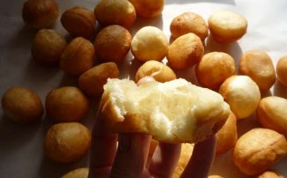

Как правило, готовится из пресного или дрожжевого теста в виде небольших пончиков (ромбовидной или круглой формы), изготовляемых путём жарки во фритюре в казане. Также существуют рецепты творожных баурсаков. Обычно подаётся в качестве дополнения, например, к шурпе, либо к чаю (у татар только к чаю, у уйгуров к чайному напитку атканчай). Баурсак является непременным атрибутом праздничного дастархана. Играет важную роль в свадебных обрядах башкир и других народов. В татарской свадебной традиции родители жениха (у сибирских татар — невесты) приносили в подарок на свадьбу блюдо с баурсаками или чак-чаком. В узбекской кухне баурсаки считаются ритуальным блюдом. У туркмен они называются пишме и имеют ромбовидную форму. У турок он называется пиши. Знакомство с баурсаками. Вернуться на главную
| Продукты | Количество |
|---|---|
| Мука | 700 Грамм |
| Дрожжи сухие | 10 Грамм |
| Молоко | 1 Стакан |
| Вода | 1 Стакан |
| Масло растительное | 50 Грамм |
| Соль | 1,5 Чайных ложки |
| Сахар | 1 Чайная ложка |
Соединяем молоко и воду, немного подогреваем, добавляем дрожжи и сахар, перемешиваем и оставляем на 15 минут. На стол высыпаем муку, смешиваем ее с солью, а затем вливаем приготовленную опару и 50 грамм растительного масла. Замешиваем тесто и перекладываем его в глубокую миску, накрываем салфеткой и ставим тесто в теплое место на 1,5 часа.

По истечении времени тесто следует обмять и поставить в тепло еще на 30-40 минут.

Теперь мы выкладываем тесто на ровную поверхность и раскатываем из него пласт толщиной 0,8-1 сантиметр.
И при помощи стакана или чашки делаем вот такие небольшие кружочки.

Обрезки мы собираем, формируем из них шар и так же раскатываем, нарезаем его на ромбики.
Теперь все наши кружочки и ромбики мы собираем вместе и накрываем полотенцем на 20 минут.

В глубокую сковороду или фритюрницу наливаем столько масла, чтобы баурсаки полностью в нем тонули. Опускаем их порциями в кипящее масло и обжариваем до золотистого цвета со всех сторон. Затем вынимаем их при помощи шумовки и перекладываем на бумажное полотенце. Вот теперь баурсаки готовы. Приятного аппетита!
